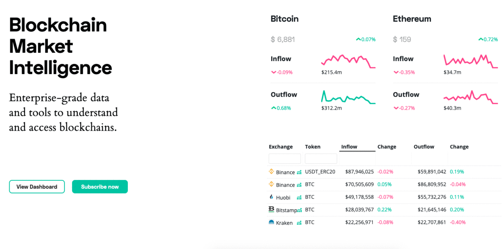

Hi there 👋🏽
My name is Sid Shekhar and I currently lead the Blockchain Research team at Coinbase. Previously I co-founded TokenAnalyst , a London-based blockchain analytics startup. Our work was covered by Bloomberg, Nasdaq, and more. I'm an alum of Cornell and UCL and have lived, worked, and studied in 🇬🇧 🇺🇸 🇮🇳 🇮🇱 🇹🇷 and 🇪🇬.
Writing
- Under the hood of the world computer
- Jackpot - A Fomo3D Adventure
- Measuring Maker-Dai Stability
- Dissecting Blocks
Presentations
- Analyzing DeFi Trading Strategies On-chain
- How we use data science at TokenAnalyst
- Classifying Transactions on the Blockchain
- Intelligent Investing using On-Chain Data (Webinar)
- Intro to on-chain analysis (Podcast)
Get in touch
The best way to get in touch is to drop me a DM on Twitter.